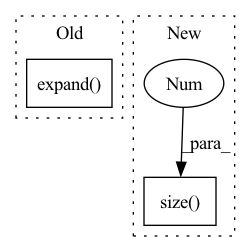

Pattern ID :301

Before Change
W = x.data.size(3)
ws = stride
hs = stride
x = x.view(B, C, H, 1, W, 1).expand(B, C, H, stride, W, stride).contiguous().view(B, C, H * stride, W * stride)
return x
After Change
assert (x.data.dim() == 4)
x = x.view(x.size(0), x.size(1), x.size(2), 1, x.size(3), 1).\
expand(x.size(0), x.size(1), x.size(2), self.stride, x.size(3), self.stride).contiguous().\
view(x.size(0), x.size(1), x.size(2) * self.stride, x.size(3) * self.stride)
return x
In pattern: SUPERPATTERN
Frequency: 3
Non-data size: 2
Instances
Fragment ID: 970126
Project Name: tianxiaomo/pytorch-yolov4
Commit Name: 1ff5a1085ce0c1b35c2ea45b707166ac404e0b66
Time: 2020-08-11
Author: ersheng@nvidia.com
File Name: tool/darknet2pytorch.py
M Class Name: Upsample_expand
N Class Name: Upsample_expand
M Method Name: forward(2)
N Method Name: forward(2)
M Parent Class: nn.Module
N Parent Class: nn.Module
M File Name: tool/darknet2pytorch.py
N File Name: tool/darknet2pytorch.py
M Start Line: 58
M End Line: 66
N Start Line: 60
N End Line: 62
'>
Before Change
dist = pairwise_euclidean_distance(inputs_col, inputs_row)
// split the positive and negative pairs
pos_mask = targets_col.expand(
targets_row.shape[0], n
).t() == targets_row.expand(n, targets_row.shape[0])
neg_mask = ~pos_mask
// For each anchor, find the hardest positive and negative
dist_ap, dist_an = [], []
After Change
dist_mat = pairwise_euclidean_distance(f, xbm_f)
// hard examples mining
n, m = f.size(0), xbm_f.size(0)
identity_mat = labels.expand(m, n).t().eq(xbm_labels.expand(n, m)).float()
dist_ap, dist_an = hard_examples_mining(dist_mat, identity_mat)
'>
Fragment ID: 970124
Project Name: thuml/transfer-learning-library
Commit Name: 0f8f51c4b2fac78edf87e29764e4da3deec6f65f
Time: 2021-10-14
Author: 57670068+tsingcbx99@users.noreply.github.com
File Name: common/vision/models/reid/loss.py
M Class Name: TripletLossXBM
N Class Name: TripletLossXBM
M Method Name: forward(5)
N Method Name: forward(5)
M Parent Class: nn.Module
N Parent Class: nn.Module
M File Name: common/vision/models/reid/loss.py
N File Name: common/vision/models/reid/loss.py
M Start Line: 132
M End Line: 152
N Start Line: 154
N End Line: 162
'>
Before Change
H = x.data.size(2)
W = x.data.size(3)
return x.view(B, C, H, 1, W, 1).expand(B, C, H, tH // H, W, tW // W).contiguous().view(B, C, tH, tW)
else:
return F.interpolate(x, size=(tH, tW), mode="nearest")
After Change
return x.view(x.size(0), x.size(1), x.size(2), 1, x.size(3), 1).\
expand(x.size(0), x.size(1), x.size(2), target_size[2] // x.size(2), x.size(3), target_size[3] // x.size(3)).\
contiguous().view(x.size(0), x.size(1), target_size[2], target_size[3])
else:
return F.interpolate(x, size=(target_size[2], target_size[3]), mode="nearest")
'>
Fragment ID: 970123
Project Name: tianxiaomo/pytorch-yolov4
Commit Name: 1ff5a1085ce0c1b35c2ea45b707166ac404e0b66
Time: 2020-08-11
Author: ersheng@nvidia.com
File Name: models.py
M Class Name: Upsample
N Class Name: Upsample
M Method Name: forward(4)
N Method Name: forward(4)
M Parent Class: nn.Module
N Parent Class: nn.Module
M File Name: models.py
N File Name: models.py
M Start Line: 23
M End Line: 36
N Start Line: 25
N End Line: 39